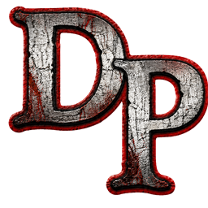

Steam launch
One red LAUNCH button. Routes through steam://run/247660 so achievements, hours and overlay keep working.

DP1 LAUNCHERBEST GAME OF ALL TIME
One LAUNCH click instead of an hour-long ritual with DPfix, 4GB Patch and DXVK. The launcher fetches and configures everything for you.
One red LAUNCH button. Routes through steam://run/247660 so achievements, hours and overlay keep working.
First run downloads and installs DPFix, 4GB LAA Patch and DXVK 2.7.1 into the game folder. No manuals, no Reddit threads.
Reads the Steam registry path and parses libraryfolders.vdf, so it finds the game even across multiple drives.
All the DPfix knobs in a real UI: AA, shadows, SSAO, DoF, reflections, custom resolutions, refresh rate, display mode.
Auto-backs up dp.sav every 2 minutes. One-click restore with a confirm dialog. Never lose progress to a crash again.
Toggle XP SP3 or Windows 98 / Me for both DP.exe and DPLauncher.exe via registry. One click.
When a new release lands on GitHub, the launcher downloads the ZIP, replaces files, restarts. No manual reinstall.
A news.json in the repo feeds the LATEST NEWS card. Updates ship instantly to every installed launcher.
Українська та English. Toggle in Settings → General — every label, tooltip, tip and modal swaps live.
DP1 Launcher is a wrapper that automates these projects. All credit for the actual fixes belongs to their authors.
Peter «Durante» Thoman
The legendary graphics fix — custom resolutions, anti-aliasing, real shadows, SSAO, UI scaling. Without DPFix the PC port is unplayable.
NTCore (Daniel Pistelli)
Flips the LAA flag on DP.exe, lifting the 2 GB RAM ceiling that crashes the 32-bit process on modern systems.
Philip «doitsujin» Rebohle
Translates Direct3D 9 calls to Vulkan at runtime. The single biggest stability + performance boost a 2010-era PC game can get.
Grab the latest DP1-Launcher-v*-win64.zip from the Releases page.
Unzip anywhere — the launcher is fully portable. No installer, no admin (unless DXVK is being installed).
Launch DP1 Launcher.exe. It finds the game in Steam, downloads everything it needs, then you press LAUNCH.
Windows 10 (1803+) or Windows 11. Game must be owned and installed via Steam.
DP1 Launcher is built by Dmytro Bidlov for the Ukrainian 🇺🇦 fan community of Deadly Premonition.
It exists because the game deserves a one-click install experience in 2026, not a wiki crawl. The launcher is free, open-source, and not affiliated with Access Games, Rising Star Games, or Toybox Inc.
Thanks to Swery (Hidetaka Suehiro) for an immortal, absurd, and heart-warming game.